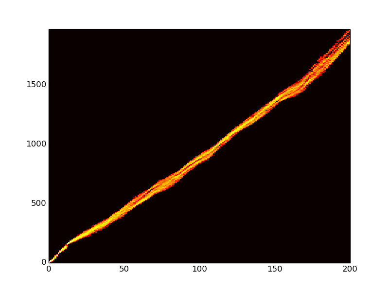
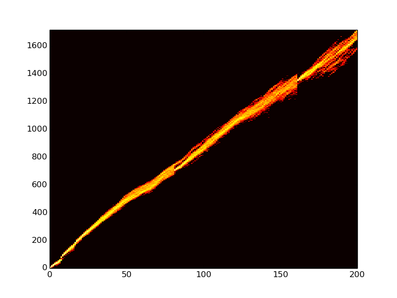
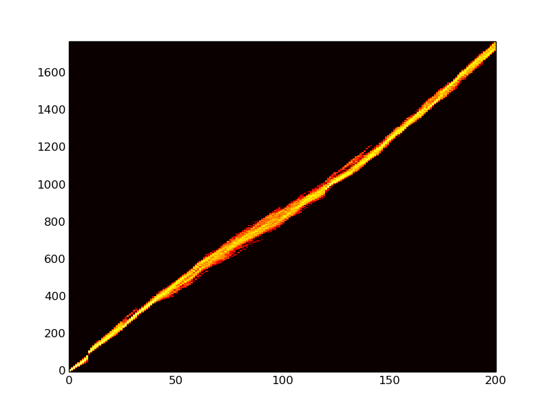
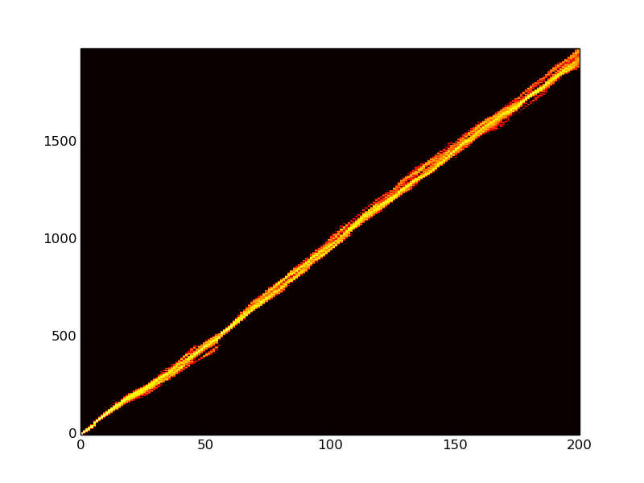
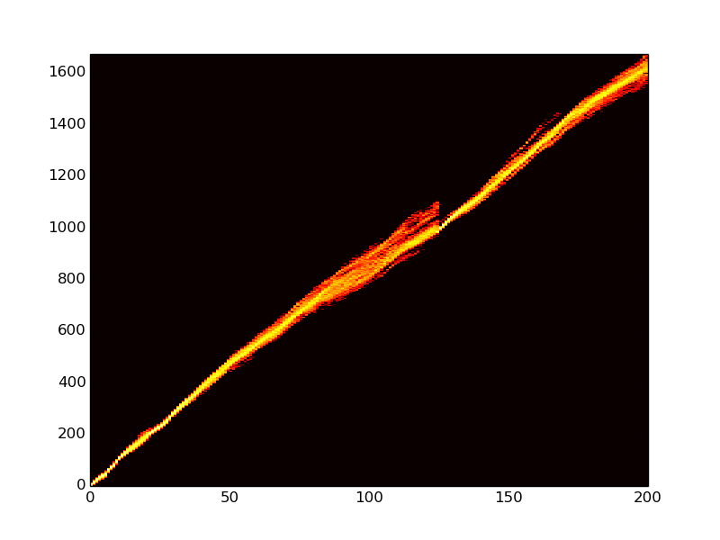

Just spent some time dealing with memory problems. Essentially, when I turn off DISABLE_GENOTYPE_CLASSIFIER (which doesn't do what it says on the tin, btw), the memory footprint rather balloons. So, that was actually responsible for the memory blow up. How stupid. But, I do indeed need to not save the genotype of every parent separately (so stupid). So, I made some modifications to the code to make this value no longer be 0 or 1, but 0 (classifier enabled), 1 (full disabled), and 2 (light tracking). What it does when set to 2 is that it saves the depth and the string of the parent IDs. These are all things that are already being stored, just blank, so the memory increase should be pretty minimal. On the order of an additional 10 bytes per organism for the string.
Currently testing mode 0 against a run I did before without changes, using the same config. I'll just diff all the files and see if they look different. They should, however, be identical.
Just had a chat with Charles, and communicated my productivity. :) All good.
Also, just tested my new code and it produces identical output in the detail files to what it shoud be doing. So, hooray! I've submitted a new set of runs to the HPCC using the new code.
So far, it looks like it's working! :D Ok, now I need to actually work on the phylogenetic tree.
Well, oops. My runs finished, none having run out of memory. This would all be well and good if my code had actually been there, but I'm a dumbass and forgot to copy over the new executable after compiling from the pulled down source. Confirmed this by generating the default avida.cfg, and not seeing my new DISABLE_GENOTYPE_CLASSIFICATION options. Sigh. So, copied it over, nuked the old output, and resubmitted my runs. :/ Even so, I can work on my script, using the data I generated locally.
Aaaand, I did not work. :/ But, my runs finished, and they seemed to work this time. I generated some flame graphs.
caninoko@dev-intel14:~/mate_discrimination/output/107_Testing_Functionality_FullTest_LightGenotypeClassification$ for i in basic_10700*; do cd $i; mkdir summary; cd summary; python ~/research_scripts/graph_generation/flamegraph/flamegraph.py $i"_"flamegraph.png 14 5 ../data/detail-?00.spop* ../data/detail-??00.spop* ../data/detail-???00.spop* ../data/detail-????00.spop*; cd ../../; done

Obviously, some sweeps, but no obvious divergences in phylogenetic depth. This isn't especially surprising, given that they are under identical conditions. Next is to actually parse the complete population file.
Ok, seriously frustrated right now. There seem to be some significant bugs with population dumps. Specifically, they are missing some random bits of information in the historical output. Separately, I'm getting some super weird overlapping lineages that I can't identify the source of. The thing sometimes likes to print lineages as comma separated values, and I have NO IDEA why.
Ok, I've fixed some things in my event file (the wrong end range for setting the lineage label, and injecting the organisms. Now that's ok. So, we'll see if it makes any kind of a difference. It may, or it may not.
It does not. It looks like my configs to save the populations including historical, just aren't doing it. WHYYYYY
This has been a stuck and frustrating couple days. So, it seems that by some weird fucking magic that I don't understand, DISABLE_GENOTYPE_CLASSIFICATION is, in fact, not storing the historical genotypes. Headdesk. I'm still kind of baffled, because my tests for identicalness were successful, including, I thought, the saving of historical data, but the fact is that it's not saving what I want. I want every fucking genotype that led to a final population. And I can't seem to have it. :(
Right, so I'm not sure that I can fix this. The memory blow-up is real. And it may be due to the saving of historic genotypes. And, because there are apparently SO MANY MORE if you are having sex (which I don't really understand, wtf).
Ok, I looked at the code, and I think I understand what has been happening. So, when we disable historical tracking in classification, it just doesn't increment the pointer counter to the parent. So, once the parent goes out of scope, and has its pointer decremented, it goes to 0, and then, poof, it's gone. This is all happening in the GenotypeArbiter.cc, and in Genotype.cc. Sigh.
So, what I really want is to be able to tell if organisms with different originating lineages are mating with each other, and how much. Gene flow. I had been hoping to be able to dig it out of the population dumps, but guess fucking not. Separately, I want to test to make sure that my wall is actually working. It may or may not be. :/
So, an idea: Keep the originating lineage intact. (maybe, separately, look at clades?). Then, I can see if there are multiple lineages in organisms.
Idea 2: Maintain a value in each organism, which represents the fraction of the inheritance of the organism that originated in one side vs the other. Like a needle that swings back and forth toward which side you are from.
Idea 3: Track and print each instance of mating across the line.
4: A combination of 2 and 3?